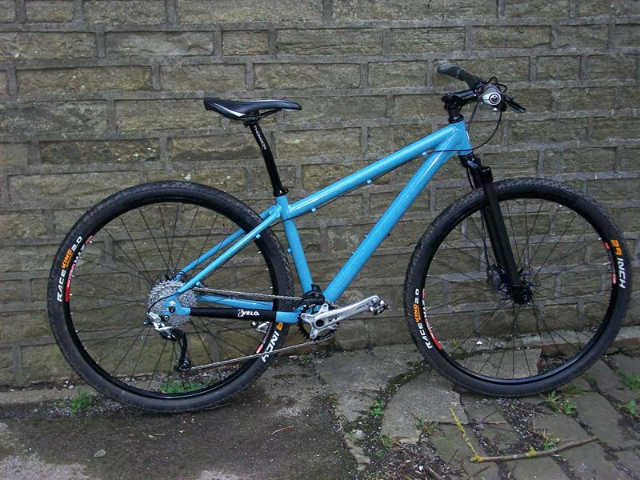

.svg)
Quais são os diferentes tipos de bikes?
Se você está pensando em comprar uma bicicleta nova, é normal ficar um pouco perdido diante da ampla variedade de opções disponíveis no mercado. Cada tipo de bicicleta foi projetado para atender a diferentes necessidades e atividades, o que pode tornar a escolha ainda mais desafiadora. É aí que entra o nosso time humanizado da Semexe, pronto para fazer toda a diferença e te ajudar na decisão! Seja você um iniciante curioso ou um entusiasta experiente, queremos tornar sua busca mais fácil. Por isso, selecionamos alguns dos principais tipos de bicicletas, para que você não se sinta mais perdido:
Híbrida / Gravel
É um cruzamento entre uma bicicleta de montanha e uma bike de estrada. Oferece uma boa variedade de opções de engrenagens e freio. Rápida e leve, ela pode se aplicar muito bem a qualquer ciclista, mas não chega a ser excepcional para nenhum estilo de pilotagem específico.
Bicicleta Elétrica (E-bike):
Equipada com um motor elétrico que auxilia o ciclista durante o pedal. Pode ser encontrada em diferentes estilos, como mountain bike elétrica, bicicleta de cidade elétrica, entre outros.
Bicicleta de Estrada (Road Bike):

Projetada para velocidade e eficiência em estradas pavimentadas. Possui guidão curvado para a frente, pneus finos e quadro leve.
Bicicleta de Triathlon:
Especialmente projetada para competições de triatlo, possui um design aerodinâmico, com foco em alta velocidade e eficiência nas três disciplinas do esporte: natação, ciclismo e corrida.
Single Speed
Por ter somente uma marcha, você talvez tenha dificuldade nas subidas e deslize em terrenos planos. Mesmo assim, é simples e leve para correr, oferecendo uma pedalada mais prazerosa. Por ter menos peças, é também mais barata e exige menos manutenção, o que faz com que seja ótima para uso diário.
Fixa
Bicicletas de pinhão fixo, fixed gear ou simplesmente fixas, têm uma catraca que gira em conjunto com a roda traseira. Essas bikes são bastante simples, o que faz com que praticamente não exijam manutenção. Afinal, elas são de marcha única e não possuem freios.
Speed ou Road

Uma bicicleta com pneus finos e opções de marchas projetadas para o asfalto. Ela é leve e rápida, sendo eficiente na estrada e capaz de lidar bem com subidas.
Time trial bike
É similar às road bikes, mas com uma geometria mais agressiva. Sua principal vantagem é ser muito leve e rápida, sendo feita para que você possa viajar o mais rápido possível. Além disso, é uma bike mais específica, o que faz com que se torne muito cara.
Dobrável
Mais prática, elas se dobram para facilitar seu armazenamento e transporte, já que pode ser levada no metrô, ônibus ou em táxis. Além disso, tem aceleração mais rápida graças às suas rodas menores. Não são muito eficientes para longas distâncias e as boas bicicletas dobráveis tendem a ser caras.
Cargo
Pesadas e grandes, essas bikes foram feitas para carregar grandes quantidades de coisas. Por essa razão, pode ser boa para quem precisa transportar objetos ou mesmo levar as crianças para a escola.
Bicicleta reclinada
Nessa bike você se senta em uma cadeira e a altura do chão é variável. Isso faz com que seja mais confortável para andar e melhor para pessoas com dificuldades de locomoção ou problemas na coluna. Pode ser um pouco ruim para trânsitos com muitas paradas e as mais baixas são perigosas para uso em estradas.
Dutch
Mais comum nas cidades europeias, essa bicicleta permite que você ande nela utilizando qualquer roupa e é de baixa manutenção. Por isso mesmo, é confortável para pedaladas casuais. Porém, é mais pesada, o que irá diminuir o ritmo do passeio.
Comfort
Vertical como uma bike dutch, ela também pode ser montada com qualquer roupa, mas é boa também para subir ladeiras. Porém, é pesada e exige muita manutenção, além de não oferecer uma boa velocidade.
Beach Cruiser
Ótima para ciclismo casual e de fácil manutenção, essa bike geralmente é de velocidade única. Por ter rodas grandes, não é boa para pedalar no asfalto.
Hardtail Mountain
Uma bicicleta de montanha com pneus grossos e bons freios. A suspensão dianteira auxilia a transpor buracos pelo caminho. Sua engrenagem e freios estão preparados para qualquer coisa, mas seu pneu não é eficiente em terrenos planos.
Full Suspension Mountain
Uma bicicleta com suspensão em ambas as rodas e pneus grandes. Tende a ter um bom feio e é bastante confortável em terrenos acidentados, apesar de ser pouco eficiente no asfalto.
Fully Rigid Mountain
Uma bicicleta de montanha com garfos fixos, um quadro robusto e pneus grossos, sendo boa também para a cidade. Boas engrenagens e freios significam que você pode cobrir longas distâncias com facilidade, mas há a necessidade de usar pneus mais finos no asfalto.
Touring
Bicicletas robustas com bom suporte para terrenos esburacados. A posição de pilotagem é bastante confortável para longas distâncias, mas tendem a ser bikes mais pesadas.
Cyclocross
Como uma bicicleta de estrada, mas com folga para pneus mais largos e um quadro mais robusto. Bons freios facilitam passeios na cidade, mas seus pneus podem não ser bons no asfalto.
Mini Velo
Normalmente com rodas menores, estas bikes podem ser construídas a partir de uma variedade de tipos de bicicletas, como as Road, Hybrid, etc… As rodas menores permitem mais aceleração, mas perdem velocidade em trechos longos. São também mais fáceis de armazenar.
BMX
Boa e resistente para a realização de manobras, elas geralmente não têm freios. São leves e muito pequenas, sendo fáceis de armazenar, mas não são recomendadas para passeios maiores.